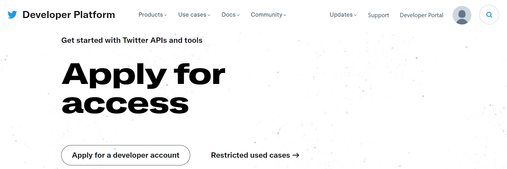

Twitter 데이터 수집
Table of contents
Tweepy로 수집 (Twitter API v1.1)
-
Tweepy: Twitter API를 python으로 쉽게 활용할 수 있게 해주는 라이브러리
- ※Twitter는 자사 서비스에서 발생하는 다양한 데이터를 쉽게 활용할 수 있도록 API를 제공한다
-
pip install tweepy로 설치해서 사용
준비 작업
1. Twitter API 권한 얻기
- Tweepy를 사용하기 위해선, 우선 Twitter API를 활용할 수 있는 권한이 필요하다
- https://developer.twitter.com/en/apply-for-access에서 계정을 만들고, application을 생성하면 API에 접속 가능한 token 등을 받을 수 있다

2. 권한 인증 & API instance 생성
import tweepy
# 트위터 API에 접근하기 위한 개인 키를 입력
consumer_key = ""
consumer_secret = ""
access_token = ""
access_token_secret = ""
# OAuth 핸들러 생성 & 개인정보 인증 요청
auth = tweepy.OAuthHandler(consumer_key, consumer_secret)
# 액세스 요청
auth.set_access_token(access_token, access_token_secret)
# api instace 생성
api = tweepy.API(auth)
특정 user의 timeline 수집
- References: tweepy, developer.twitter
API.user_timeline(user_id, screen_name, since_id, count, max_id, trim_user, exclude_replies, include_rts)
- user_id나 screen_name 중 하나의 parameter로 timeline을 가져올 user를 명시
- cout: default는 20. maximum 200까지 가능
- 트윗 내용 가져오기:
status.text- 예시로, 삼성전자 뉴스룸(@SamsungNewsroom)의 타임라인 데이터를 가져옴
status = api.user_timeline(screen_name = 'SamsungNewsroom', count=1)[0] status.text'삼성전자, 보호종료 청소년 자립 돕는 ‘삼성 희망디딤돌’ 광주센터 개소\n\nhttps://t.co/TUZGjUwlUn - 트윗 작성 날짜 가져오기:
status.created_atprint(status.created_at) # datetime.datetime 형식 # 아래와 같이 원하는 형식으로 바꿔줘도 좋다 import datetime print(datetime.datetime.strftime(status.created_at, '%Y.%m.%d'))2021-06-02 03:34:26 2021.06.02 - retweet된 횟수 가져오기:
status.retweet_countstatus.retweet_count3 - 좋아요(하트) 수 가져오기:
status.favorite_countstatus.favorite_count12 - tweet 작성자 정보:
status.author# status.author에 접근 후, 아래와 같이 한 단계씩 더 접근해서 각 정보를 추출 print(status.author.name) print(status.author.screen_name) print(status.author.location) print(status.author.description)삼성전자 뉴스룸 SamsungNewsroom Seoul, Korea 삼성전자 공식 트위터입니다. (Global Newsroom now uses @Samsung) - retweet된 글인지 여부 확인
# status.retweeted_status.text가 존재하는지 확인하면 됨 try: print(status.retweeted_status.text) except: print('not retweeted')not retweeted
Cursor를 활용해 수집
- Reference: tweepy
- Cursor를 활용하면 limit없이 원하는 만큼의 tweet을 수집할 수 있다
-
tweepy.Cursor()안에 api.user_timeline 등 원하는 수집 옵션을 넣어주면 된다 -
.items()로 limit(수집을 원하는 양)을 넘겨준다
import pandas as pd
tweet_list = []
for status in tweepy.Cursor(api.user_timeline, id='SamsungNewsroom').items(400):
temp_list = [status.text, status.created_at,status.retweet_count, status.favorite_count]
tweet_list.append(temp_list)
df = pd.DataFrame(tweet_list, columns=['Tweets', 'Created_Date', '#_of_Retweets', '#_of_Likes'])
print(len(df))
df.head()
400
| Tweets | Created_Date | #_of_Retweets | #_of_Likes | |
|---|---|---|---|---|
| 0 | 삼성전자, 보호종료 청소년 자립 돕는 ‘삼성 희망디딤돌’ 광주센터 개소\n\nhttps://t.co/TUZGjUwlUn | 2021-06-02 03:34:26+00:00 | 3 | 12 |
| 1 | 삼성전자, 차세대 기업 서버용 ‘ZNS SSD’ 출시\n\nhttps://t.co/fZuY9s5J7P | 2021-06-02 02:24:53+00:00 | 3 | 17 |
| 2 | 삼성전자, 인공지능으로 완전히 새로워진 시스템에어컨 ‘DVM S2’ 출시\n\nhttps://t.co/CXdr48M34c | 2021-06-01 02:02:53+00:00 | 3 | 14 |
| 3 | 삼성전자, 시청각 장애인용 TV 보급사업 공급자로 선정\n\nhttps://t.co/TmByXt3uLA | 2021-05-30 01:09:24+00:00 | 2 | 18 |
| 4 | 삼성전자, 세계 최고 광효율에 색품질 혁신을 더한 LM301B EVO 패키지 출시\n\nhttps://t.co/gOurN6OYZL | 2021-05-27 02:05:31+00:00 | 2 | 10 |
+) ‘TooManyRequests’ error
- twitter api를 사용해 데이터를 가져올 때에는 일정 기간 동안 가져올 수 있는 횟수가 제한되어 있다.
- 특히, Cursor로 무제한 수집하다보면 rate limit이 초과되어 error가 날 수 있기에, 아래와 같은 코드를 추가해주면 rate limit이 초과될 때 일정 시간을 기다렸다 작업해주게 된다
def limit_handled(cursor):
while True:
try:
yield next(cursor)
except tweepy.TooManyRequests:
time.sleep(15 * 60) # 15분 기다려줌.
for status in limit_handled(tweepy.Cursor(api.user_timeline, screen_name = '').items()):
## -- 코드 -- ##
- tweepy exception의 종류: https://docs.tweepy.org/en/latest/exceptions.html
특정 user의 follower 수집
- References: tweepy, developer.twitter
API.followers(user_id, screen_name, cursor, count, skip_status, include_user_entities)
- 이름, screen_name 등 정보 가져오기
- 예시로, 방탄소년단(@BTS_twt)의 follower 정보를 수집
followers = api.followers(screen_name = 'BTS_twt') follower = followers[0] print(follower.name) # 이름 print(follower.screen_name) # screen name (@뒤에 붙은 이름) print(follower.created_at) # 계정이 생성된 날 print(follower.description) # description print(follower.followers_count) # 팔로워 수 print(follower.friends_count) # 팔로잉하는 사람 수Suci Suci90898274 2021-06-03 01:28:22+00:00 💜💜 0 13 - Cursor를 이용해 다량을 한번에 수집
follower_list = [] for follower in tweepy.Cursor(api.followers, screen_name = 'BTS_twt').items(400): temp_list = [follower.name, follower.screen_name, follower.created_at, follower.description, follower.followers_count, follower.friends_count] follower_list.append(temp_list) df = pd.DataFrame(follower_list, columns=['Name', 'ID', 'Created_Date', 'Description', 'Followers', 'Following']) df.head()Name ID Created_Date Description Followers Following 0 felix felix22210574 2021-06-03 01:54:20+00:00 0 2 1 aily 2OOrb 2021-06-02 23:46:19+00:00 she / they ; 🔞 0 11 2 delin delin73271563 2021-06-03 01:54:00+00:00 0 1 3 Muniri Iri IriMuniri 2021-06-03 01:49:15+00:00 nikmatilah hidup selagi masih bernafas🙂 0 10 4 Rhealyn Mamaril MamarilRhealyn 2021-06-03 01:52:35+00:00 yolo 0 5
특정 query를 포함한 tweet 수집
- References: tweepy, developer.twitter
API.search_tweets(q, geocode, lang, locale, result_type, count, until, since_id, max_id, include_entities)
- q: 알고 싶은 query를 입력. 해당 query가 포함된 tweet만 수집되어 온다
- result_type: default는 ‘mixed’
- mixed: include both popular & real time results
- recent: return only the most recent results
- popular: return only the most popular results
- until: 특정 일자 이전의 tweet만 검색. 날짜는 ‘YYYY-MM-DD’형태로 입력.
- ※ search index는 7-day limit이 있기에, 일주일 이전의 tweet은 검색되지 않는다
- tweet 정보 가져오기
# 이런식으로 특정 geocode에서의 tweet만 검색해올 수도 있다 korea_geo = "%s,%s,%s" % ("35.95", "128.25", "1000km") statuses = api.search_tweets(q='방탄', geocode=korea_geo, count=1) status = statuses[0] print(status.text) # tweet 내용 print(status.created_at) # 게시 일자 print(status.retweet_count) # retweet된 횟수 print(status.favorite_count) # 좋아요 받은 횟수RT @corwin1129: 맥도날드가 비겁(?)하게 방탄을 끌고 오는 바람에.... 2021-06-03 02:03:36+00:00 2797 0 - tweet 작성자의 정보 가져오기
print(status.user.id) # ID print(status.user.name) # 이름 print(status.user.screen_name) # screen name (@뒤에 붙은 이름) print(status.user.description) # description print(status.user.followers_count) # 팔로워 수 print(status.user.friends_count) # 팔로잉하는 사람 수3018274394 🍎BABARAMAN🍉 BKB_shot 겜덕 551042289 체인블락씁니다 71 98 - retweet된 글의 경우, 원본 확인
-
retweeted_status가 존재하면 retweet된 글이다
# 원본 글 확인 print(status.retweeted_status.text) # 원본 글 작성자 정보 확인 print(status.retweeted_status.user.id) print(status.retweeted_status.user.name) print(status.retweeted_status.user.screen_name)맥도날드가 비겁(?)하게 방탄을 끌고 오는 바람에.... https://t.co/cA3C1FCC1H 42567931 일기통관 corwin1129 -
-
Cursor를 이용해 다량을 한번에 수집
tweet_list = [] korea_geo = "%s,%s,%s" % ("35.95", "128.25", "1000km") for status in tweepy.Cursor(api.search_tweets, q='방탄', geocode=korea_geo, until='2021-06-01').items(400): temp_list = [status.text, status.created_at, status.retweet_count, status.favorite_count] try: temp_list.append(status.retweeted_status.text) except: temp_list.append('Not Retweeted') temp_list.extend([status.user.name, status.user.followers_count]) tweet_list.append(temp_list) df = pd.DataFrame(tweet_list, columns=['Text', 'Created_Date', '#_of_Retweets', '#_of_Likes', 'Original_Text', 'User', 'User_#_of_Followers']) df.head()Text Created_Date #_of_Retweets #_of_Likes Original_Text User User_#_of_Followers 0 RT @borahe7p: 스밍인증하면 아이스크림에 세차권에 목걸이라………………. 더 방탄 스밍이랑 뮤스 죽어라고 달리겠습니다. https://t.co/1H6y54MHPZ 2021-05-31 23:57:28+00:00 605 0 스밍인증하면 아이스크림에 세차권에 목걸이라………………. 더 방탄 스밍이랑 뮤스 죽어라고 달리겠습니다. https://t.co/1H6y54MHPZ ᴮᴱpurpleU4ever 77 1 @guitar_aeong 작년보다 더 빡세요 ㅋㅋㅋ 우리 방탄 힘 실어 주기…(생략) 2021-05-31 23:57:20+00:00 0 1 Not Retweeted 최애는7명차애는아미 211 2 RT @soulmate91_bts: 다마가 11억뷰가 되었어요!!🎉🎉🎉🎉…(생략) 2021-05-31 23:54:24+00:00 15 0 다마가 11억뷰가 되었어요!!🎉🎉🎉🎉…(생략) 다정미니💕🐤 𝔅𝔲𝔱𝔱𝔢𝔯🧈 2434 3 RT @BABO_bts0613: 버터뮤비합산..출처가 어딘지는 모르지만…합산된적이 없었기 때문에 위험한겁니다…(생략) 2021-05-31 23:53:31+00:00 301 0 버터뮤비합산..출처가 어딘지는 모르지만…합산된적이 없었기 때문에 위험한겁니다…(생략) ⟭⟬ 휘비 ⟬⟭ 422 4 RT @borahe7p: 스밍인증하면 아이스크림에 세차권에 목걸이라………………. 더 방탄 스밍이랑 뮤스 죽어라고 달리겠습니다. https://t.co/1H6y54MHPZ 2021-05-31 23:53:02+00:00 605 0 스밍인증하면 아이스크림에 세차권에 목걸이라………………. 더 방탄 스밍이랑 뮤스 죽어라고 달리겠습니다. https://t.co/1H6y54MHPZ 동경 510